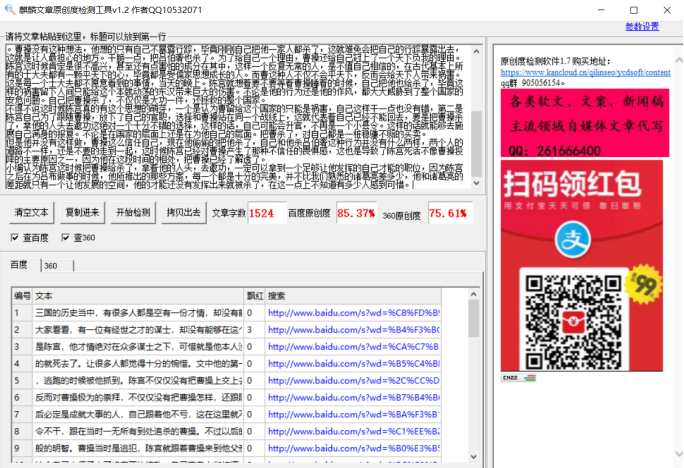

《三国演义》陈宫为何离开曹操，不是因为他杀人，原因是这个
三国的历史当中，有很多人都是空有一份才情，却没有能够的展现出来，今天小编就带大家看看，有一位有经世之才的谋士，却没有能够在这个大舞台上发光发亮，这个人就是陈宫，他才情绝对在众多谋士之下，可惜就是他本人没有能够很好的展现出来，早早的就死去了。让很多人都觉得十分的惋惜。
文中他的第一次出场是在曹操行刺失败后，逃跑的时候被他抓到。陈宫不仅仅没有把曹操上交上去，为自己谋取一份好的福利，反而对曹操极为的崇拜，不仅仅没有把曹操怎样，还跟随在曹操身边。陈宫认为曹操以后必定是成就大事的人，自己跟着他不亏，这 在这里就不得不佩服陈宫，放弃自己打县令不干，跟在当时一无所有到处追杀的曹操。不过以后的事实证明，陈宫这个决定是这般的明智。
曹操当时是逃犯，陈宫就跟着曹操来到他父亲老友吕伯奢的家中，吕听到这个自己大侄子来了肯定要热情款，自己亲自上街打酒。但是吕伯走后不久，曹操就听到的有磨刀的声音，这时候曹操的人头很值钱，也不是所有人都能像陈宫一样跟随自己，信服自己，肯定很害怕有一个意外。
首先吕伯奢在自己来了之后就款待一下就出门这个行径就十分可以，很有可能是出去报官，毕竟他也不是自己朋友，是自己父亲的，在这个方面不得不得不堤防。听到磨刀的声音的时候，曹操就先下手把一家子人都干掉。但是后来发现人家磨刀只是为了杀猪招待他。陈宫对这个虽然很不满意，但是只能认为是误杀，也没有说什么，虽然心中有一些不快，但是依然跟在曹操的身边。
在离开的路他们遇到了上集市打酒回来的吕伯奢，这就十分的尴尬。他热情的款待自己，但是自己却一把他一家子人都杀了。曹操没有这种想法，他想的只有自己不暴露行踪，毕竟刚刚自己把他一家人都杀了，这就难免会把自己的行踪暴露出去，这就是让人最担心的地方。干脆一点，把吕伯奢也杀了。为了给自己一个理由，曹操还给自己冠上了一个天下负我的理由。
陈宫这时候肯定是很不高兴，甚至还有点害怕的成分在其中，这样一个反复无常的人，是不值自己相信的，在古代基本上所有的士大夫都有一颗平天下的心，毕竟都是受儒家思想成长的人。而曹这种人不仅不会平天下，反而会给天下人带来祸害。这是每一个士大夫都不愿意看到的事情，当天的晚上。
陈宫就想着要不要等着曹操睡着的时候，自己把他也给杀了，毕竟这样的祸害留下人间只能给这个本就动荡的东汉带来巨大的伤害。不论是他的行为还是他的作风，都大大威胁到了整个国家的安危问题。自己把曹操杀了，不仅仅是大功一件，还拯救的整个国家。
不得不说这时候陈宫真的有这个思想的萌芽，一个是认为曹留给这个国家的只能是祸害，自己这样干一点也没有错，第二是陈宫自己为了跟随曹操，放下了自己的官职，选择和曹操站在同一个战线上，这就代表着自己已经不能回去，要是把曹操杀了，拿他的人头去邀功这绝对一个十分不错的选择，这样的话，自己可能会升官，不再是一个小县令。这样的话就能够去施展自己满身的报复。不论是在国家的层面上还是在为他自己的层面。把曹杀了，对自己都是一桩稳赚不赔的买卖。
但是他并没有这样做，曹操这么信任自己，现在他偷偷的把他杀了，自己和他杀吕伯奢这种行为并没有什么两样，两个人的道路不一样，还是不要的走到一起，这时候陈宫已经对曹操产生了那种不信任的畏惧感，这也是导致了陈宫死活不像曹操投降的主要原因之一，因为他在这段时间的相处，把曹操已经了解透了。
小编认为陈宫这时候把曹操给杀了，拿着他的人头，去邀功，一定可以拿到一个足够让他发挥的自己才能的职位，因为陈宫之后在为吕布做事的时候，他所推出的那些方案，每一个都是十分的完美，并不比我们熟悉的诸葛亮差多少，他和诸葛亮的差距就只有一个让他发展的空间，他的才能还没有发挥出来就被杀了，在这一点上不知道有多少人感到可惜。
